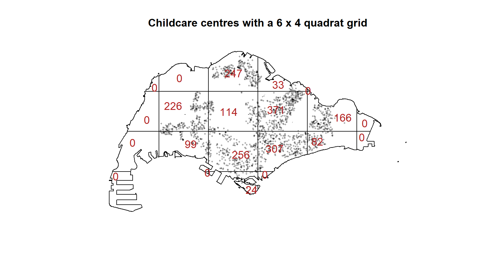
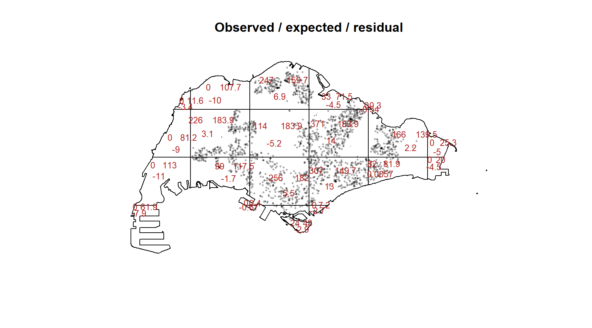
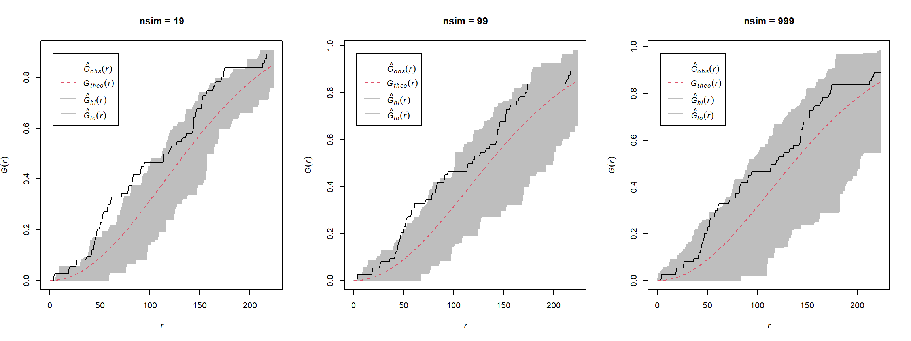

pacman::p_load(sf, spatstat, tmap, tidyverse)In-class Exercise 2: Quadrat Analysis and Monte Carlo Resolution
Overview
Lesson 2 covers spatial point pattern analysis in three blocks: density-based measures, distance-based measures, and the Monte Carlo machinery used to test them. Hands-on Exercise 2 and 2b worked through kernel density estimation, the Clark-Evans test, and the G, F, K and L functions, and are not repeated here.
Two topics from the lecture are not touched by either hands-on exercise, and both are the subject of this in-class exercise:
- Quadrat analysis — the density-based method the lecture presents in four steps, together with the variance-mean ratio and the weaknesses that follow from the arbitrary grid.
- Monte Carlo resolution — how
nsimsets the smallest p-value a simulation test can report and the confidence level an envelope can achieve.
The second topic answers a question the hands-on exercise raised but could not settle: why the Monte Carlo Clark-Evans test returned exactly p = 0.001 and no smaller.
The Data
The same two layers as Hands-on Exercise 2.
| Dataset | Source | Format |
|---|---|---|
| Child Care Services | data.gov.sg | GeoJSON, point |
| Master Plan 2019 Subzone Boundary (No Sea) | data.gov.sg | GeoJSON, polygon |
Inputs Carried Over from Hands-on Exercise 2
The point pattern is rebuilt exactly as before — geometry only so the pattern is unmarked, jittered under a fixed seed to separate the 187 coincident locations. The reasoning is given in Hands-on Exercise 2 and is not repeated:
mpsz_cl <- st_read("data/geospatial/MasterPlan2019SubzoneBoundaryNoSea.geojson",
quiet = TRUE) %>%
st_transform(crs = 3414) %>%
filter(SUBZONE_N != "SOUTHERN GROUP",
PLN_AREA_N != "WESTERN ISLANDS",
PLN_AREA_N != "NORTH-EASTERN ISLANDS")
childcare_sf <- st_read("data/geospatial/ChildCareServices.geojson",
quiet = TRUE) %>%
st_zm(drop = TRUE, what = "ZM") %>%
st_transform(crs = 3414)
set.seed(1234)
childcare_ppp <- rjitter(as.ppp(st_geometry(childcare_sf)),
retry = TRUE, nsim = 1, drop = TRUE)
childcareSG_ppp <- childcare_ppp[as.owin(mpsz_cl)]
childcare_ck_ppp <- childcare_ppp[as.owin(filter(mpsz_cl, PLN_AREA_N == "CHOA CHU KANG"))]
c(Singapore = npoints(childcareSG_ppp),
`Choa Chu Kang` = npoints(childcare_ck_ppp)) Singapore Choa Chu Kang
1925 74 Quadrat Analysis
The lecture sets out quadrat analysis in four steps: divide the study area into subregions of equal size, count the events in each, calculate the intensity of each, then compute a quadrat statistic and test it against CSR.
Step 1 and 2: Dividing the area and counting events
quadratcount() performs both steps at once. nx and ny set the number of columns and rows in the grid:
qc_sg <- quadratcount(childcareSG_ppp, nx = 6, ny = 4)
qc_sgtile
Tile row 1, col 1 Tile row 1, col 2 Tile row 1, col 3 Tile row 1, col 4
0 0 247 33
Tile row 1, col 5 Tile row 2, col 1 Tile row 2, col 2 Tile row 2, col 3
0 0 226 114
Tile row 2, col 4 Tile row 2, col 5 Tile row 2, col 6 Tile row 3, col 1
371 166 0 0
Tile row 3, col 2 Tile row 3, col 3 Tile row 3, col 4 Tile row 3, col 5
99 256 307 82
Tile row 3, col 6 Tile row 4, col 1 Tile row 4, col 2 Tile row 4, col 3
0 0 0 24
Tile row 4, col 4
0 plot(childcareSG_ppp, cex = 0.4, pch = 16,
main = "Childcare centres with a 6 x 4 quadrat grid")
plot(qc_sg, add = TRUE, col = "firebrick", cex = 1.2)
Note that the 6 × 4 grid does not produce 24 quadrats. The observation window is the Singapore coastline, not a rectangle, so cells falling entirely in the sea are dropped and the ones along the coast are clipped to irregular shapes. Several of the surviving tiles hold no centres at all.
Step 3: Intensity per quadrat
Counts are not comparable between tiles once the window has clipped them to different areas. intensity() divides each count by its tile’s area — the values below are centres per square kilometre:
round(intensity(qc_sg) * 1000000, 3)tile
Tile row 1, col 1 Tile row 1, col 2 Tile row 1, col 3 Tile row 1, col 4
0.000 0.000 4.447 1.328
Tile row 1, col 5 Tile row 2, col 1 Tile row 2, col 2 Tile row 2, col 3
0.000 0.000 3.534 1.783
Tile row 2, col 4 Tile row 2, col 5 Tile row 2, col 6 Tile row 3, col 1
5.802 3.420 0.000 0.000
Tile row 3, col 2 Tile row 3, col 3 Tile row 3, col 4 Tile row 3, col 5
2.423 4.044 5.897 2.877
Tile row 3, col 6 Tile row 4, col 1 Tile row 4, col 2 Tile row 4, col 3
0.000 0.000 0.000 1.607
Tile row 4, col 4
0.000 Step 4: The quadrat statistic and the CSR test
quadrat.test() compares the observed counts against the counts expected if the pattern were CSR, using a Pearson chi-squared statistic:
qt_sg <- quadrat.test(childcareSG_ppp, nx = 6, ny = 4)
qt_sg
Chi-squared test of CSR using quadrat counts
data: childcareSG_ppp
X2 = 935.42, df = 20, p-value < 2.2e-16
alternative hypothesis: two.sided
Quadrats: 21 tiles (irregular windows)plot(childcareSG_ppp, cex = 0.4, pch = 16, main = "Observed / expected / residual")
plot(qt_sg, add = TRUE, cex = 0.8, col = "firebrick")
Each tile now carries three numbers: observed count, expected count under CSR, and the Pearson residual. The residuals are what the chi-squared statistic sums.
WarningThe test warns about itself
The output carries the note “Some expected counts are small; chi^2 approximation may be inaccurate”. The chi-squared distribution is an approximation that requires a reasonable expected count in every cell, and the clipped coastal tiles violate that. The simulated version in the second half of this exercise avoids the assumption entirely, which is one practical reason to prefer it.
The variance-mean ratio
The lecture gives the VMR as the summary of what the quadrat counts say about the pattern: close to 0 for a uniform distribution, close to 1 for a random one, and greater than 1 for a clustered one. The logic is that a Poisson process has variance equal to its mean, so any excess variance is clustering.
counts_sg <- as.vector(qc_sg)
c(mean = mean(counts_sg),
variance = var(counts_sg),
VMR = var(counts_sg) / mean(counts_sg)) mean variance VMR
91.66667 14589.73333 159.16073 A VMR far above 1 says the counts vary between tiles much more than a random process would produce — the pattern is clustered.
The weakness: sensitivity to quadrat size
The lecture lists three weaknesses of quadrat analysis, and the first is that it is sensitive to the quadrat size. Repeating the whole procedure across a range of grids makes the size of that effect concrete:
grid_sizes <- c(2, 4, 6, 8, 10, 14)
quadrat_summary <- map_dfr(grid_sizes, function(n) {
qc <- quadratcount(childcareSG_ppp, nx = n, ny = n)
v <- as.vector(qc)
tt <- suppressWarnings(quadrat.test(childcareSG_ppp, nx = n, ny = n))
tibble(grid = paste0(n, " x ", n),
tiles = length(v),
mean = mean(v),
variance = var(v),
VMR = var(v) / mean(v),
X2 = as.numeric(tt$statistic),
p = tt$p.value)
})
quadrat_summary %>%
mutate(across(c(mean, variance, VMR, X2), ~ round(.x, 2)),
p = format.pval(p, digits = 3))# A tibble: 6 × 7
grid tiles mean variance VMR X2 p
<chr> <int> <dbl> <dbl> <dbl> <dbl> <chr>
1 2 x 2 4 481. 12675. 26.3 183. <2e-16
2 4 x 4 14 138. 31371. 228. 964. <2e-16
3 6 x 6 29 66.4 7555. 114. 1064. <2e-16
4 8 x 8 46 41.8 2980. 71.2 1354. <2e-16
5 10 x 10 67 28.7 1255. 43.7 1389. <2e-16
6 14 x 14 120 16.0 503. 31.3 2144. <2e-16
NoteInterpretation
The VMR ranges from about 26 to about 228 across these six grids. That is a ninefold swing produced by nothing but the choice of grid, on one unchanged point pattern — so the VMR cannot be read as a property of the pattern, only as a property of the pattern and the grid used to measure it.
The direction of the answer is stable: every grid rejects CSR, and every VMR is far above 1, so the conclusion that childcare centres are clustered does not depend on the choice. The magnitude is not stable at all, which is why a VMR should never be quoted without the grid that produced it.
The 4 × 4 grid gives the extreme value because its cells are large enough to straddle both the dense central corridor and the empty catchment, maximising the variance between tiles. Finer grids break those contrasts up into more, smaller cells and the ratio falls.
The lecture’s other two weaknesses are visible in the same table. Quadrat analysis is a measure of dispersion rather than of pattern: it counts how uneven the tiles are, but rearranging the centres within a tile changes nothing. And it returns a single number for the whole region, so it cannot say that Tampines is clustered while Choa Chu Kang is not — a distinction the Clark-Evans tests in Hands-on Exercise 2 did make.
Monte Carlo Resolution
The lecture’s closing block concerns how nsim governs what a simulation test can report. Two consequences follow, and both can be demonstrated directly.
How nsim sets the smallest reportable p-value
A Monte Carlo p-value is a rank, not a continuous quantity. The observed statistic is placed among nsim simulated ones, so the p-value can only take the values 1/(nsim+1), 2/(nsim+1), and so on. The lecture states the consequence: with nsim = 99 the smallest p-value obtainable is 0.01, and with nsim = 999 it is 0.001.
Running the simulated quadrat test on the strongly clustered national pattern at three simulation counts:
map_dfr(c(19, 99, 999), function(n) {
set.seed(1234)
tt <- suppressWarnings(
quadrat.test(childcareSG_ppp, nx = 6, ny = 4,
method = "MonteCarlo", nsim = n))
tibble(nsim = n,
p_two_sided = tt$p.value,
floor_1 = 1 / (n + 1),
floor_2 = 2 / (n + 1))
})# A tibble: 3 × 4
nsim p_two_sided floor_1 floor_2
<dbl> <dbl> <dbl> <dbl>
1 19 0.1 0.05 0.1
2 99 0.02 0.01 0.02
3 999 0.002 0.001 0.002Every p-value equals 2/(nsim+1), not the 1/(nsim+1) the lecture quotes. The reason is that quadrat.test() defaults to alternative = "two.sided", which spends half the probability in each tail. Asking a directional question restores the lecture’s floor:
map_dfr(c(19, 99, 999), function(n) {
set.seed(1234)
tt <- suppressWarnings(
quadrat.test(childcareSG_ppp, nx = 6, ny = 4,
method = "MonteCarlo", nsim = n,
alternative = "clustered"))
tibble(nsim = n,
p_one_sided = tt$p.value,
floor_1 = 1 / (n + 1))
})# A tibble: 3 × 3
nsim p_one_sided floor_1
<dbl> <dbl> <dbl>
1 19 0.05 0.05
2 99 0.01 0.01
3 999 0.001 0.001
NoteThis explains the Clark-Evans result
Hands-on Exercise 2 ran clarkevans.test() with method = "MonteCarlo", nsim = 999 and alternative = "clustered", and got exactly p = 0.001. That is the one-sided floor, 1/(999+1): not one of the 999 simulated CSR patterns produced an R as extreme as the observed 0.552.
The practical point is that such a p-value should be read as “p ≤ 0.001, based on 999 simulations” rather than as a measured value. Reporting it as though it were an ordinary p-value overstates what the test resolved, and comparing it against an asymptotic p-value such as 2.2e-16 compares two different things.
How nsim sets the achievable confidence level
The lecture makes a second point about envelope(): the confidence level is constrained by nsim, and with nsim = 99 the finest two-tailed envelope is at 98% confidence.
By default envelope() shades the region between the pointwise minimum and maximum of the simulations. Discarding exactly one value in each tail leaves a confidence level of 1 − 2/(nsim+1):
envelope_summary <- map_dfr(c(19, 99, 999), function(n) {
set.seed(1234)
e <- envelope(childcare_ck_ppp, Gest, nsim = n, verbose = FALSE)
tibble(nsim = n,
confidence = paste0(round(100 * (1 - 2 / (n + 1)), 1), "%"),
mean_width = round(mean(e$hi - e$lo, na.rm = TRUE), 4))
})
envelope_summary# A tibble: 3 × 3
nsim confidence mean_width
<dbl> <chr> <dbl>
1 19 90% 0.129
2 99 98% 0.202
3 999 99.8% 0.265par(mfrow = c(1, 3))
for (n in c(19, 99, 999)) {
set.seed(1234)
plot(envelope(childcare_ck_ppp, Gest, nsim = n, verbose = FALSE),
main = paste0("nsim = ", n))
}
NoteInterpretation
The envelope gets wider as nsim increases — mean width 0.129, 0.202, 0.265 — which is the opposite of the usual intuition that more simulations mean more precision.
There is no contradiction. A default envelope is the minimum and maximum of the simulations, and the extremes of 999 draws are further apart than the extremes of 19. What rises with nsim is the confidence level: 90.0%, then 98.0%, then 99.8%. A wider band at higher confidence is not a less precise result, it is a different statement.
The consequence for reading these plots is that a curve escaping a 19-simulation envelope is weak evidence, while the same curve escaping a 999-simulation envelope is strong. The two pictures are not interchangeable, and an envelope plot is uninterpretable unless the nsim behind it is stated.
To hold the confidence level fixed while increasing nsim, nrank has to rise with it — nrank = 25 with nsim = 999 gives the same 95% level as nrank = 1 with nsim = 39.
Rule of thumb
The lecture’s practical guidance, confirmed by the results above:
- Use at least
nsim = 99for quick exploratory tests, andnsim = 999or more for stable p-values and smooth envelopes. - Report p-values together with their Monte Carlo resolution — “p < 0.001, based on 999 simulations” — rather than as bare numbers.
- State
nsimalongside every envelope plot, since the same curve carries different weight at different simulation counts.
Reference
- Kam, T. S. ISSS626 Geospatial Analytics and Applications, Lesson 2 — Spatial Point Patterns Analysis.
- Chapter 11 Point Pattern Analysis of Intro to GIS and Spatial Analysis, sections 11.2–11.4.
- Chapter 12 Hypothesis testing of the same text.
- Baddeley, A., Rubak, E. and Turner, R. (2015) Spatial Point Patterns: Methodology and Applications with R. Chapman and Hall/CRC.